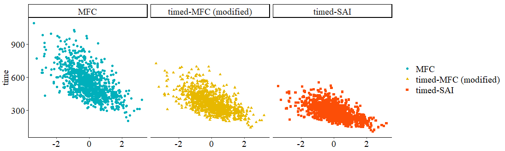
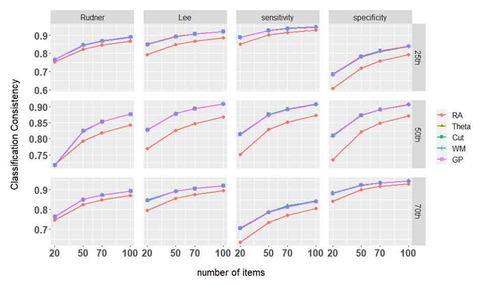
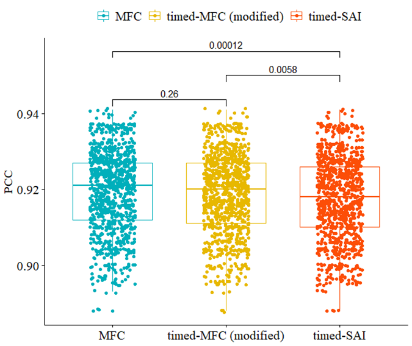
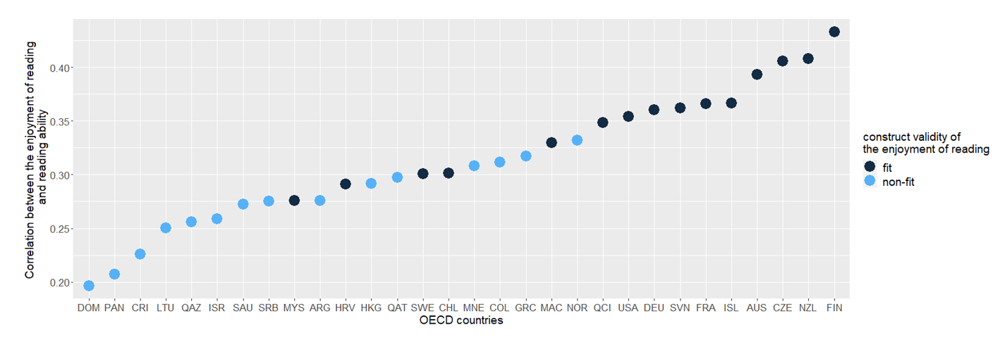
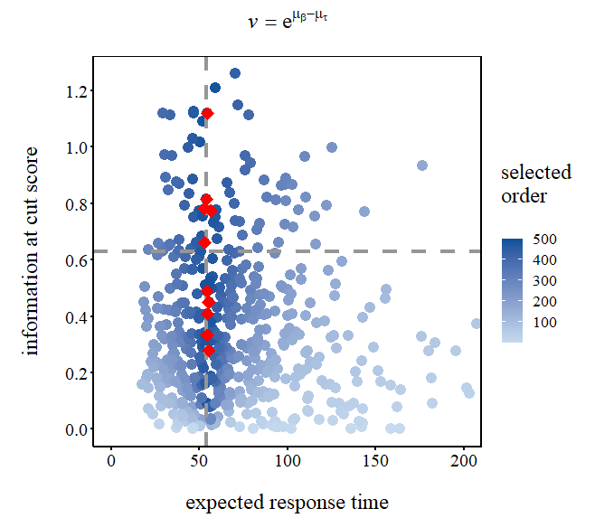
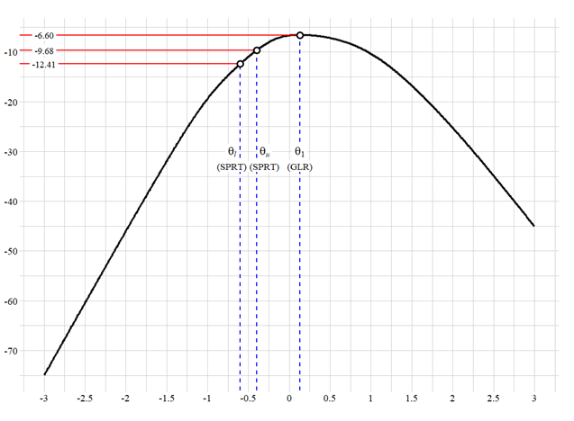
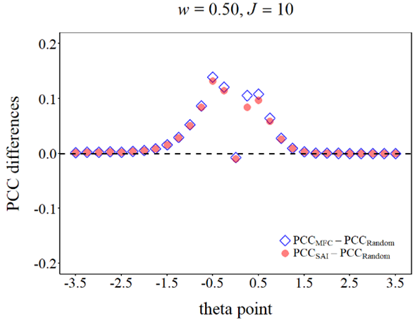
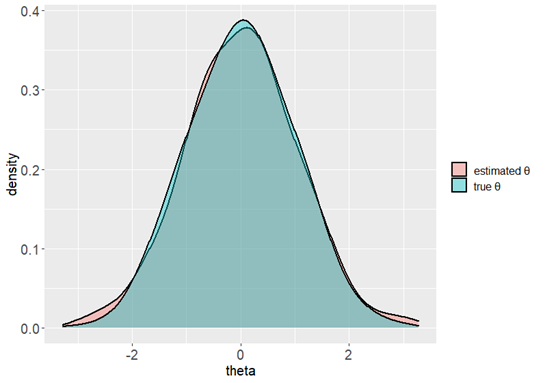

Codes for Various Plots I Have Drawn Before
Updated on July 15, 2022
This article may be useful to you if you want to have similar features on your plots. Here you can figure out how to include additional text and lines, how to organize the point according to a specific order, how to change the transparency, etc.
- scatter plot
- line plot
- boxplot with significant test
- order the points according to a particular variable
- highlight key data points
- insert texts and lines
- modify the shape or color
- scatter plot
- line plot
- boxplot with significant test

library(ggplot2)
# The first six rows of the data are showed below.
head(datause)
method theta time
1 MFC -1.2070657 826.5765
2 MFC 0.2774292 501.9339
3 MFC 1.0844412 607.5252
4 MFC -2.3456977 621.7279
5 MFC 0.4291247 448.1083
6 MFC 0.5060559 725.4090
ggplot(datause, aes(x = theta, y = time))+
geom_point(aes(color = method, shape = method))+
scale_color_manual(values = c("#00AFBB", "#E7B800", "#FC4E07"))+
# If you want to separate each group like I did, try the line below.
facet_wrap(~method, ncol = 3, nrow = 1)+
theme_set(theme_classic())+
theme(legend.title = element_blank(),
axis.text = element_text(size = 12, family="serif"),
axis.title = element_text(size = 14, family="serif"),
axis.title.x = element_blank(),
axis.text.x = element_text(size = 15, family="serif", color = "black"),
axis.text.y = element_text(size = 15, family="serif", color = "black"),
plot.title = element_text(size = 14, family="serif"),
legend.text = element_text(size = 15, family="serif"),
strip.text = element_text(size = 15, family="serif"))

library(ggplot2)
# The first six rows of the data are showed below.
head(datause)
nitems selection consistency type cut
1 20 RA 0.7541247 Rudner 25th
2 20 Theta 0.7671183 Rudner 25th
3 20 Cut 0.7671730 Rudner 25th
4 20 WM 0.7672108 Rudner 25th
5 20 GP 0.7671798 Rudner 25th
6 50 RA 0.8234817 Rudner 25th
plot.CC <- ggplot(data = datause,
aes(x = nitems, y = consistency, group = selection)) +
geom_line(aes(colour = selection), size = 1) +
geom_point(size = 2, aes(colour = selection, shape = selection)) +
labs(x = "number of items", y = "Classification Consistency") +
scale_x_continuous(breaks = c(20, 50, 70, 100)) +
theme(text = element_text(size = 15, family = "sans"),
axis.text.x = element_text(size = 15, face = "bold"),
axis.text.y = element_text(size = 15, face = "bold"),
plot.margin = unit(rep(3, 4), 'lines'),
axis.title.x = element_text(vjust = -3),
axis.title.y = element_text(vjust = 5),
panel.spacing = unit(1, "lines"),
legend.title = element_blank())
# We need to separate each plot according to the type of the index.
plot.CC + facet_grid(cut ~ type, scales = "free")

library(ggplot2)
library(ggpubr) # This is the main character.
# The first six rows of the data are showed below.
head(datause)
method PCC
1 MFC 0.922
2 MFC 0.921
3 MFC 0.923
4 MFC 0.920
5 MFC 0.922
6 MFC 0.924
# Define the group pair that you want to test.
my_comparisons <- list(c("MFC", "timed-MFC (modified)"),
c("timed-MFC (modified)", "timed-SAI"),
c("MFC", "timed-SAI"))
# Great! We can make a boxplot first.
ggboxplot(datause, x = "method", y = "PCC",
color = "method", palette = c("#00AFBB", "#E7B800", "#FC4E07"),
# Add all your data onto the plot.
add = "jitter"
) +
theme(legend.title = element_blank(),
axis.text = element_text(size = 12, family="serif"),
axis.title = element_text(size = 14, family="serif"),
axis.title.x = element_blank(),
axis.text.x = element_text(size = 15, family="serif", color = "black"),
axis.text.y = element_text(size = 15, family="serif", color = "black"),
plot.title = element_text(size = 14, family="serif"),
legend.text = element_text(size = 15, family="serif")
) +
# Next, we can use t-test for comparision.
stat_compare_means(comparisons = my_comparisons, method = "t.test")- order the points according to a particular variable

library(ggplot2)
library(dplyr)
# The first six rows of the data are showed below.
head(datause)
CNY code valid corre modelFIT
1 QAZ 31 0 0.2560892 non-fit
2 ARG 32 0 0.2759617 non-fit
3 AUS 36 1 0.3932474 fit
4 CHL 152 1 0.3015014 fit
5 COL 170 0 0.3113862 non-fit
6 CRI 188 0 0.2261491 non-fit
# This step is to create a temporary data.frame to restore the order data.
# e.g, here, I want to re-order the data according to the correlation (i.e., corre)
tempDF <-
infludata %>%
arrange(corre)
head(tempDF)
CNY code valid corre modelFIT
1 DOM 214 0 0.1963621 non-fit
2 PAN 591 0 0.2072438 non-fit
3 CRI 188 0 0.2261491 non-fit
4 LTU 440 0 0.2500453 non-fit
5 QAZ 31 0 0.2560892 non-fit
6 ISR 376 0 0.2586625 non-fit
# Now you get the desired order, and you can start to plot.
order <- tempDF$CNY
ggplot(datause, aes(x = CNY, y = corre, color = modelFIT)) +
geom_point(size = 6) +
scale_x_discrete(limits = order) +
scale_color_manual(values = c('#132b43','#56b1f7'))+
labs(x = "OECD countries",
y = "Correlation between the enjoyment of reading \n and reading ability") +
labs(color = "construct validity of\nthe enjoyment of reading")+
theme(legend.position = "right",
legend.title = element_text(size = 14),
legend.text = element_text(size = 14),
axis.text = element_text(size = 13),
axis.title = element_text(size = 14),
plot.title = element_text(size = 14))
- highlight key data points
- insert texts and lines
- modify the shape or color

library(ggplot2)
# The first six rows of the data are showed below.
head(datause)
info ET value
1 0.2070762 108.69578 0.003827824
2 0.2166885 92.40194 0.005731924
3 0.2430004 76.77980 0.010955015
4 0.7163323 102.87900 0.014836777
5 0.9668220 109.88926 0.017486031
6 0.1802682 19.84861 0.005187645
# I want to order the data points according to "value" and find the top 10 points,
# so I first create a new variable "ord" to signal the desired order.
datause$ord = findInterval(datause$value, sort(datause$value))
# Then, I can get my key points.
# (You can skip this if you have known your key points)
key <- datause[order(datause$ord, decreasing = T), ][1:10, ]
# Now my data was like:
head(datause)
info ET value ord
1 0.2070762 108.69578 0.003827824 89
2 0.2166885 92.40194 0.005731924 130
3 0.2430004 76.77980 0.010955015 216
4 0.7163323 102.87900 0.014836777 257
5 0.9668220 109.88926 0.017486031 283
6 0.1802682 19.84861 0.005187645 121
# I also define a horizontal line at y-axis.
y_med <- (max(datause$info)-min(datause$info))/2
# Finally, we can start to plot.
pe <- ggplot(datause, aes(ET, info)) +
geom_point(aes(colour = ord), size = 4) +
# As I did here, you can add additional lines to the plot.
geom_hline(yintercept = y_med, color = "#969696", size = 1.5, linetype = "dashed")+
geom_vline(xintercept = 54, color = "#969696", size = 1.5, linetype = "dashed")+
# Here, we can highlight the key points.
geom_point(data = as.data.frame(cbind(ET = key$ET, info = key$info)), aes(ET, info),
color = "red", shape = 18, size = 5) +
# Listed below are some codes to make the plot look prettier.
labs(x = "expected response time", y = "information at cut score",
title = expression(italic(v) == e^paste(mu[beta]-mu[tau]))) +
scale_y_continuous(breaks = seq(0, 1.2, 0.2))+
scale_color_gradient(low = "#c6dbef", high = "#08519c") +
labs(colour="selected\norder\n")+
theme_minimal()+
theme(panel.grid = element_blank(),
panel.border = element_rect(fill = NA, color="black", size = 1, linetype = "solid"),
axis.line.x = element_line(linetype = 1, color = "black", size = 1),
axis.line.y = element_line(linetype = 1, color = "black", size = 1),
axis.ticks.x = element_line(color = "black", size = 1),
axis.ticks.y = element_line(color = "black", size = 1),
axis.title.x = element_text(margin = margin(t = 20), size = 18, family = "serif"),
axis.title.y = element_text(margin = margin(r = 20), size = 18, family = "serif"),
plot.title = element_text(margin = margin(b = 20), hjust = 0.5, size = 18, family = "serif"),
legend.position = "right",
legend.title = element_text(size = 14, family = "serif"),
axis.text = element_text(size = 15, color = "black", family = "serif"),
legend.text = element_text(size = 13, family = "serif"))
pe + coord_fixed(ratio = 160, xlim = c(0, 200))

library(ggplot2)
library(ggridges)
library(hrbrthemes)
# The first six rows of the data are showed below.
head(datause)
th lnL
1 -3.00 -74.94047
2 -2.99 -74.64811
3 -2.98 -74.35579
4 -2.97 -74.06350
5 -2.96 -73.77125
6 -2.95 -73.47904
# This is our base plot, just a parabola.
p <- ggplot(datause, aes(x = th, y = lnL)) +
geom_line(color = "black", size = 1.5, alpha = 0.9, linetype = 1) +
scale_x_continuous(breaks = seq(-3, 3, 0.5), labels = seq(-3, 3, 0.5)) +
scale_y_continuous(breaks = seq(-80, 10, 10), labels = seq(-80, 10, 10)) +
theme_ipsum() +
theme(axis.text.x = element_text(size = 15, family="serif", color = "black"),
axis.text.y = element_text(size = 15, family="serif", color = "black")) +
xlab(" ") +
ylab(" ") +
ggtitle(" ") +
# Next, you can include some guidelines on the x-axis and y-axis using different colors.
# The setting of value is totally up to you.
geom_segment(x = -0.4, xend = -0.4, y = -100, yend = datause$lnL[261],
color = "blue", linetype = 2, size = 1)+
geom_segment(x = -0.6, xend = -0.6, y = -100, yend = datause$lnL[241],
color = "blue", linetype = 2, size = 1)+
geom_segment(x = datause$th[which.max(datause$lnL)], xend = datause$th[which.max(datause$lnL)],
y = -100, yend = max(datause$lnL),
color = "blue", linetype = 2, size = 1)+
geom_segment(x = -0.4, xend = -4, y = datause$lnL[261], yend = datause$lnL[261],
color = "red", linetype = 1, size = 1)+
geom_segment(x = -0.6, xend = -4, y = datause$lnL[241], yend = datause$lnL[241],
color = "red", linetype = 1, size = 1)+
geom_segment(x = datause$th[which.max(datause$lnL)], xend = -4,
y = max(datause$lnL), yend = max(datause$lnL),
color = "red", linetype = 1, size = 1)
# You are encouraged to define the texts you want to add and their locations before the next step.
annotation1 <- data.frame(x = c(-3, -3, -3),
y = c(datause$lnL[261], datause$lnL[241], max(datause$lnL)),
label = c("-9.68", "-12.41", "-6.60"))
annotation2 <- data.frame(x = c(-0.7, -0.3, datause$th[which.max(datause$lnL)]),
y = c(-33, -33, -33),
label = c("(SPRT)", "(SPRT)", "(GLR)"))
# The merits of this is obvious.
# You can easily include those annotations through geom_label.
p + geom_label(data = annotation1, aes(x = x, y = y, label = label),
size = 5, family = "serif",
label.size = NA) +
geom_label(data = annotation2, aes(x = x, y = y, label = label),
size = 5, family = "serif",
label.size = NA) +
# But life isn't always smooth sailing,
# even so, if you also need to label some formulae, you can add them in this way.
annotate("label", x = -0.7, y = -30, label = expression(italic(theta[l])),
size = 6, family = "serif", label.size = NA)+
annotate("label", x = -0.3, y = -30, label = expression(italic(theta[u])),
size = 6, family = "serif", label.size = NA)+
annotate("label", x = datauseth[which.max(datauseth[which.max(datauselnL)], y = -30,
label = expression(italic(theta[1])),
size = 6, family = "serif", label.size = NA)+
# The codes below are used to make three points stand out.
# If you do not need to do so, feel free to skip this part.
annotate("point", x = -0.6, y = datause$lnL[241], size = 5)+
annotate("point", x = -0.4, y = datause$lnL[261], size = 5)+
annotate("point", x = datauseth[which.max(datauseth[which.max(datauselnL)], y = max(datause$lnL), size = 5)+
annotate("point", x = -0.6, y = datause$lnL[241], size = 3, color = "#ffffff")+
annotate("point", x = -0.4, y = datause$lnL[261], size = 3, color = "#ffffff")+
annotate("point", x = datauseth[which.max(datauseth[which.max(datauselnL)], y = max(datause$lnL), size = 3, color = "#ffffff")

library(ggplot2)
# The first six rows of the data are showed below.
head(datause)
theta PCC method
1 -3.50 0.0017 MFC
2 -3.25 0.0021 MFC
3 -3.00 0.0022 MFC
4 -2.75 0.0029 MFC
5 -2.50 0.0022 MFC
6 -2.25 0.0038 MFC
# If your label name includes formulae, defining it as a variable will make things easier.
labelname <- c(expression(PCC[MFC] - PCC[Random]), expression(PCC[SAI] - PCC[Random]))
# Now we can start to plot.
w05 <- ggplot(datause)+
geom_point(aes(x = theta, y = PCC, shape = method, col = method, alpha = method),
size = 5, stroke = 1.5)+
geom_hline(yintercept = 0, size = 1.3, linetype = "dashed")+
# Here is the point, you can define different shapes and colors for different groups.
scale_shape_manual(values = c(5, 16),
labels = labelname)+
scale_color_manual(values = c("blue", "red"),
labels = labelname)+
scale_alpha_manual(values = c(0.8, 0.5),
labels = labelname)+
# Listed below are codes to limit the range of x-axis and y-axis.
scale_y_continuous(limits = c(-0.2, 0.2), breaks = seq(-0.2, 0.2, 0.1))+
scale_x_continuous(breaks = seq(-3.5, 3.5, 1))+
# Listed below are some codes to make the plot look prettier.
labs(x = "theta point", y = "PCC differences",
title = bquote(paste(italic(w), " = 0.50, ", italic(J) == .(Ji))))+
theme_minimal()+
theme(panel.grid = element_blank(),
panel.border = element_rect(fill = NA, color="black", size = 1, linetype = "solid"),
axis.line.x = element_line(linetype = 1, color = "black", size = 1),
axis.line.y = element_line(linetype = 1, color = "black", size = 1),
axis.ticks.x = element_line(color = "black", size = 1),
axis.ticks.y = element_line(color = "black", size = 1),
axis.title.x = element_text(margin = margin(t = 20), size = 30, family = "serif"),
axis.title.y = element_text(margin = margin(r = 20), size = 30, family = "serif"),
plot.title = element_text(margin = margin(b = 20), hjust = 0.5, size = 30, family = "serif"),
axis.text = element_text(size = 25, color = "black", family = "serif"),
legend.position = c(.78, .12),
legend.text = element_text(size = 20, family = "serif", hjust = 0),
legend.title = element_blank())
w05 + coord_fixed(ratio = 12)

library(ggplot2)
# The first six rows of the data are showed below.
head(datause)
type theta
1 estimated 0.02181399
2 estimated 0.50863802
3 estimated 0.55536742
4 estimated -0.09117160
5 estimated -0.60815771
6 estimated -0.66477364
ggplot(data = datause, aes(x = theta, group = type, fill = type)) +
# You can modify the color and transparency here.
geom_density(adjust = 1.5, alpha = 0.4, size = 0.75) +
theme(text = element_text(size = 15, family = "sans"),
axis.text.x = element_text(size = 15),
axis.text.y = element_text(size = 15),
legend.title = element_blank())